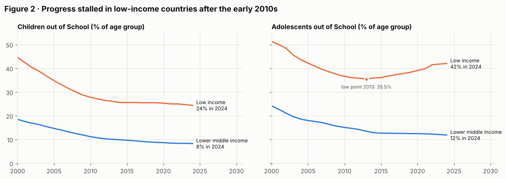
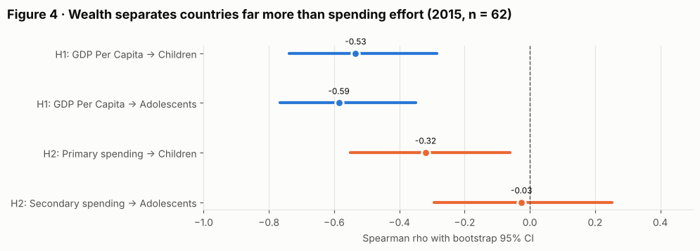
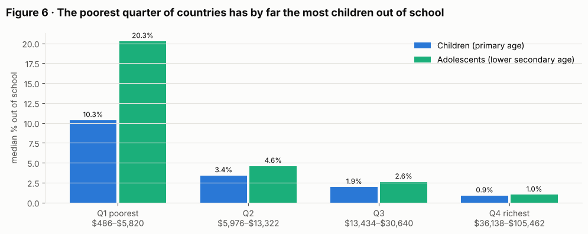
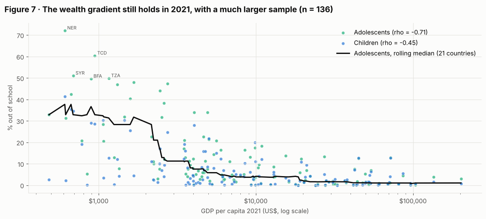

Do richer countries keep more children in school?
Wealth, public spending and out-of-school rates across 217 economies, 2000–2025, using World Bank development indicators.
- Data
- World Bank World Development Indicators, 217 economies
- Tools
- pandas, SciPy, matplotlib
- Type
- TU Delft coursework (EPA-1316), rebuilt
The question
Are children and adolescents more likely to be out of school in poorer countries, and does higher government spending per student help?
- H1: countries with higher GDP per capita have lower out-of-school rates.
- H2: countries that spend less per student have higher out-of-school rates.
The data
A World Bank DataBank export of five indicators for 217 economies. It isn't a clean table: missing values are written as "..", footer lines sit below the data, and five regional and income aggregates are mixed in with the countries, which would count the same children twice. Spending data also stops in 2018, so any test that needs spending has to use 2018 or earlier.
The bigger picture
Since 2000 the share of primary-age children out of school in low-income countries fell from 45% to about 25%, but it has been flat since around 2014. For adolescents it's getting worse: 35.5% in 2013, 42% in 2024.


Testing the hypotheses
Wealth is strongly linked to keeping children in school: GDP per capita correlates at −0.59 with the share of adolescents out of school (2015, 62 countries). In the poorest quarter of countries the median is 20.3% of adolescents out of school; in the richest quarter it's 1.0%. H1 is supported.




Spending effort (spending per student as a share of GDP per capita) shows only a weak raw link. Spending in dollars looks strongly linked, but it's almost the same variable as wealth (ρ = 0.97 with GDP per capita). Holding GDP constant with a partial rank correlation, no spending measure has a significant link left. H2 is not supported.
Does it still hold?
Out-of-school rates and GDP run to 2024, so H1 can be retested on a larger, more recent sample. With 136 economies in 2021 the link is even stronger (ρ = −0.71 for adolescents), and it looks like a threshold: rates stay around 30% below roughly $2,000 per capita, drop steeply up to $4,000, and are close to zero above $20,000. The result also holds in every year from 2008 to 2016.


What to keep in mind
- Countries that report all five indicators are about three times richer than those that don't, so the poorest countries are under-represented.
- There's no spending data after 2018, so H2 can't be tested on recent years.
- These are correlations between countries, not causal effects.